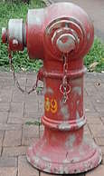
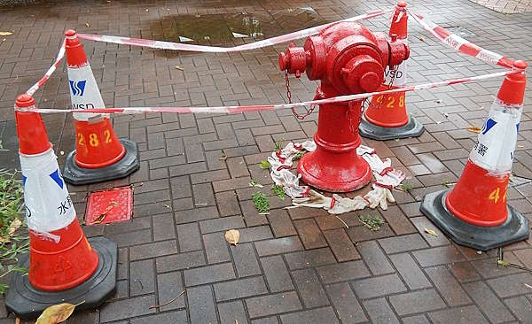
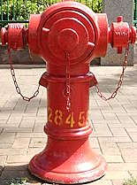

Octagonal hydrant 53 and Round Head 28459
[Sources for this page]Sources for this page
- Google | Google Maps (Street View) | https://www.google.com/maps/
- Waterworks Office (British Hong Kong), Y1970-M12 to Y1971-M11 | HKRS287-1-685 Fire Hydrant - Mainland - Records of Installation, Removals, Changes of Position or Type | Public Records Office, Government Records Service (HKSAR Government) | No digital copy available, you must visit the Hong Kong Public Records Building and borrow the report to read the physical copy (you can't bring it outside the building so you must read it there)
Octagonal hydrant 53
According to government records, the "Octagonal hydrant" numbered 53 used to be installed on Devon Road at Cornwall Street, its front nozzle faced west. It was installed before 1971 at (I believe) the pedestrian crossing of Devon Road, but it was resited a few steps south on Y1971-M03-D09, presumably out of the way for pedestrians (but I am not sure if that was the reason for the resiting, it might also be caused by the underground water main layout changes which was part of the resiting works). It was resited again at some point between Y2009-M08 and Y2011-M02, moving it closer to Cornwall Street and its front nozzle faced north after the resiting was completed. One funny detail is that the pedestrian crossing was also moved slightly north and was "aligned" with 53 again, but there was more space for pedestrian to walk around 53 on the wider Cornwall Street footpath, unlike the narrow footpath of Devon Road.
Octagonal hydrant 53 → 28459
"Octagonal hydrant" 53 was renumbered 28459 at some point between Y2022-M03 and M10. It was also during that time period when some drainage works was being carried out a few metres away from "Octagonal" 28459 on Devon Road, and a hose was connected to one of "Octagonal" 28459's side nozzles, the hose went into a traffic cone, then presummably underground (the traffic cone was above a temporary square drainage cover). In Y2023-M05, the hose was detached but the traffic cone and temporary drainage cover was still there, and the drainage works was still being carried out. At some point between Y2023-M05 and M11, "Octagonal" 28459 was removed and replaced by a Round Head also numbered 28459.
Round Head 28459
In the Y2023-M11 Google Maps street view capture, Round Head 28459 was seen doing what "Octagonal" 28459 was doing one year ago, having a hose on one of its side nozzles which disappeared into the temporary drainage cover. The drainage work site and the temporary drainage cover were both located "left" of "Octagonal" 28459's position, and the hose was connected to the "left" side nozzle. But for Round Head 28459, the hose was connected to the "right" side nozzle. I wonder why they didn't just connect the hose to the "left" side nozzle like with "Octagonal" 28459.
Repainting of Round Head 28459
It seems Round Head 28459 was neglected afterwards and its red paint slowly faded away. Then, on (or a few days before) Y2026-M06-D25, Round Head 28459 was repainted. For some reason, someone (presumably the workers who repainted Round Head 28459) decided to put twelve worker gloves around the base of Round Head 28459, resulting in a funny ritualistic scene as if someone just summoned the Round Head. I don't really understand why they would put the gloves around the hydrant's base like that, the four traffic cones and caution tape already gave plenty of warning to pedestrians about wet paint.
 |
| red Round Head 28459 prior to being repainted |
| Cornwall Street at Devon Road |
| Photo taken in Y2026-M03 |
 |
| red Round Head 28459 after it was just repainted |
| Cornwall Street at Devon Road |
| Photo taken in Y2026-M06 |
 |
| red Round Head 28459 after its new red paint dried and hydrant number repainted |
| Cornwall Street at Devon Road |
| Photo taken in Y2026-M08 |